Циклова комісія
зенітних ракетних та радіотехнічних військ
Зенітні ракетні війська: Еліта та технології
Циклова комісія зенітних ракетних та радіотехнічних військ створена у 2022 році
з метою підготовки військових фахівців на зенітні ракетні комплексів та систем
середньої дальності та малої дальності та фахівців радіотехнічних військ.
Діяльність циклової комісії зосереджена на вирішені завдань підготовки з питань
експлуатації та бойового застосування зенітних ракетних комплексів С-300ПТ(ПС) та БУК М1.
Тривалість навчання – 2 роки.
Напрями підготовки
Cпеціальність К7 «Озброєння та військова техніка».
Спеціалізації:
- «Експлуатація зенітних ракетних комплексів та систем середньої дальності»
На посади:
- технік приймально-передавальних пристроїв радіотехнічної батареї зенітного ракетного комплексу 300ПТ(ПС);
- технік стартової батареї зенітного ракетного комплексу С-300ПТ(ПС).
- «Експлуатація радіоелектронних засобів інформаційного забезпечення і управління зенітними
ракетними комплексами та системами».
На посади:
- заступник начальника обслуги самохідної вогневої установки;
- заступник начальника обслуги пуска заряджаючої установки;
- заступник начальника обслуги пункту бойового управління. Здобувачі освіти вивчають ЗРК БУК, ЗРК С300ПС (в перспективі ЗРК PATRIOT, ЗРК IRIS-T). Випускники здійснюють бойове застосування зенітних ракетних комплексів у складі бойової обслуги (по різним цілям від БПЛА, літака до балістичних ракет), а також технічне обслуговування цих комплексів.
- «Експлуатація радіотехнічних систем та пристроїв засобів радіолокації». На посади:
- начальник радіолокаційної станції;
- начальник обслуги;
- начальник наземного запитувача. Здобувачі освіти вивчають радіолокаційні станції П – 19МА, П-18, П-37. Випускники призначаються на посади у військові частини радіотехнічних військ Повітряних Сил.
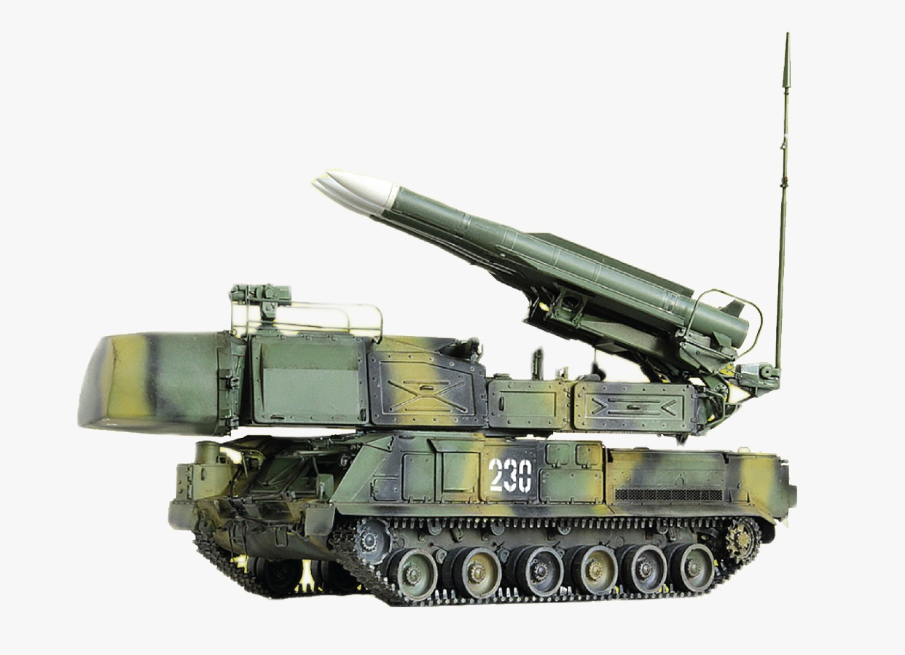
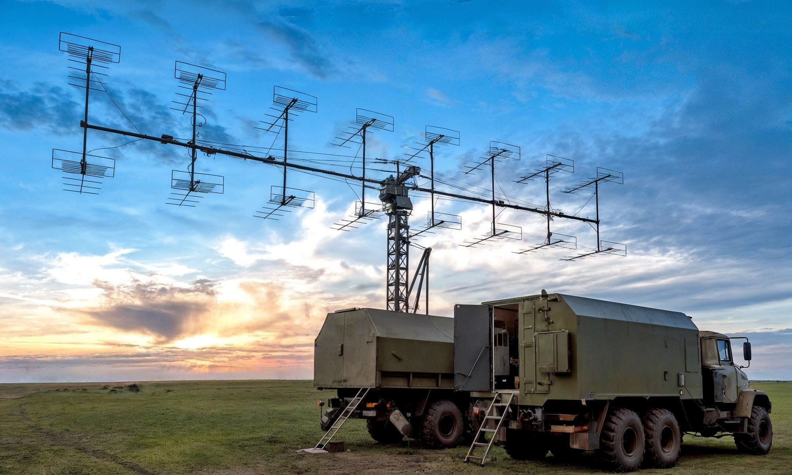
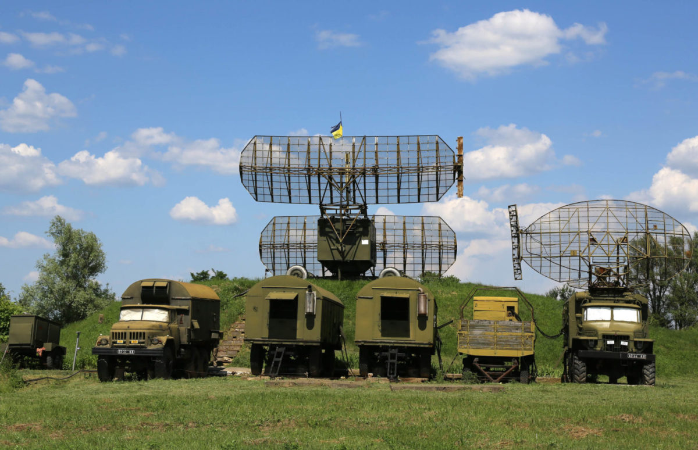
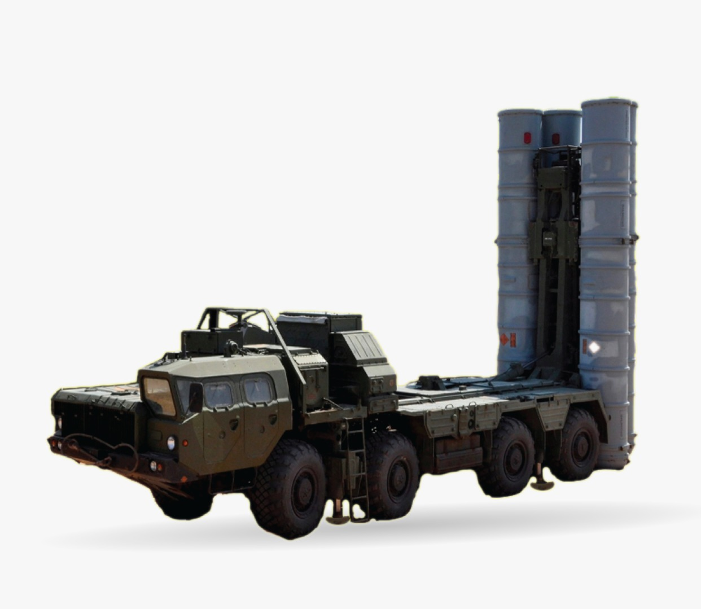
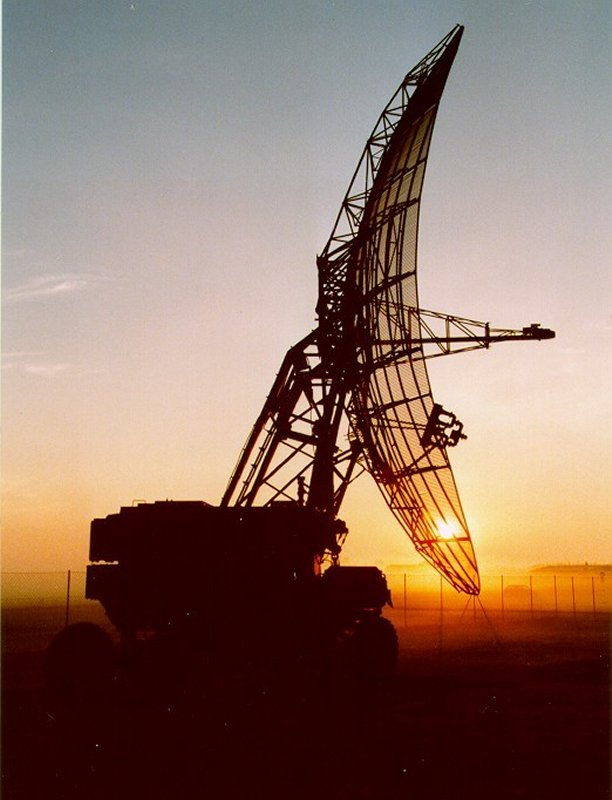
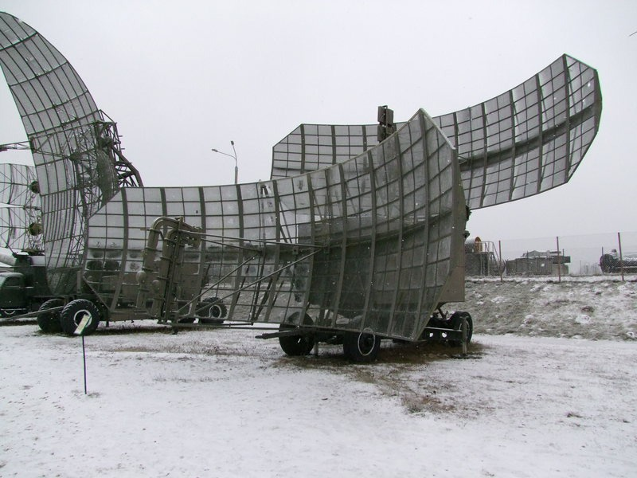
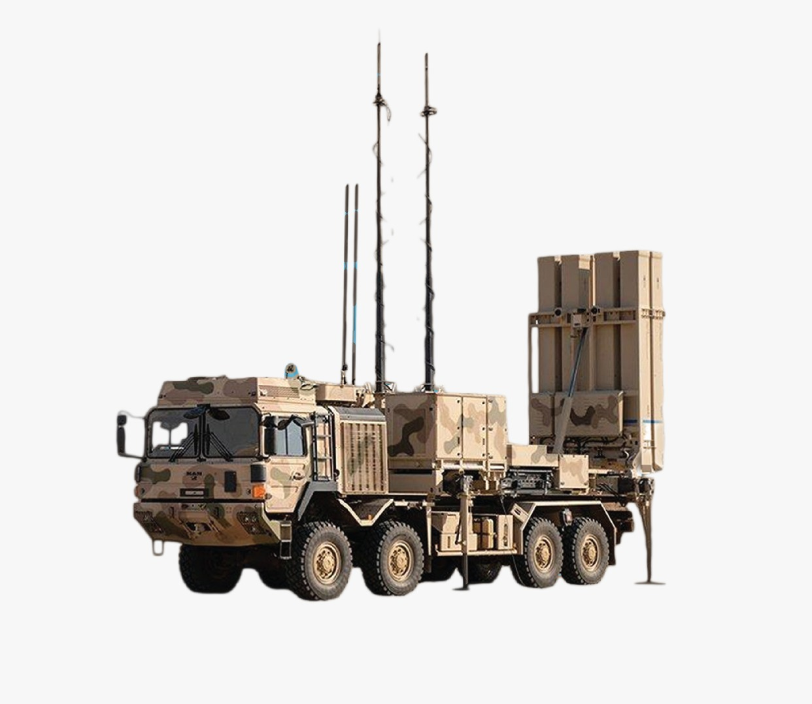
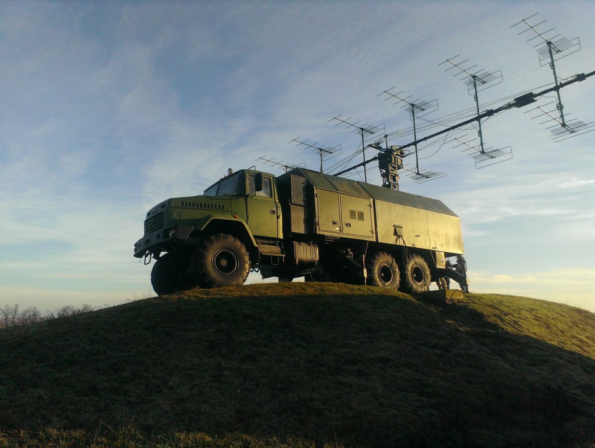
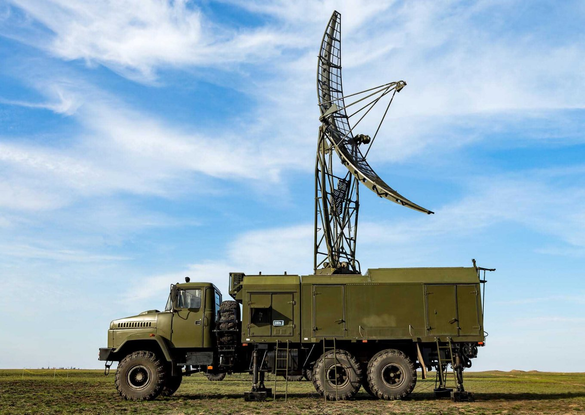
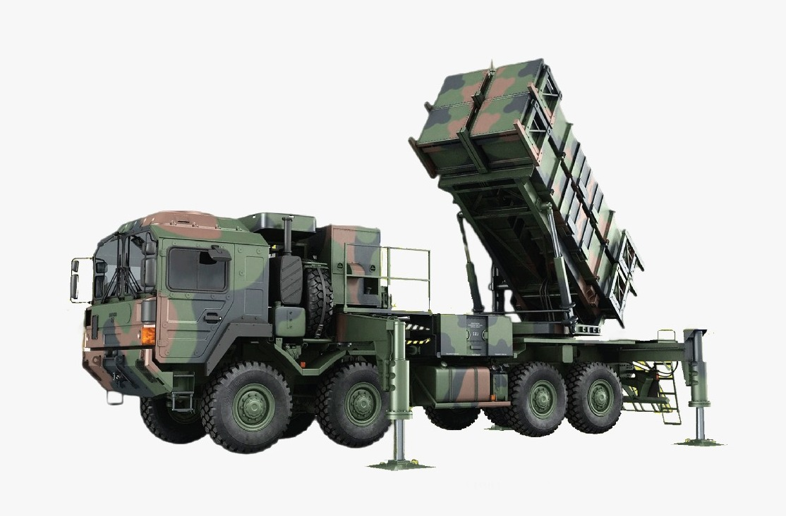
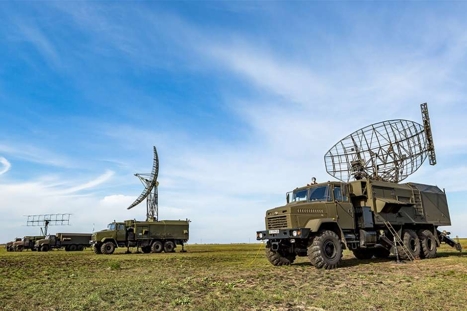

ЯКА ВАРТІСТЬ НАВЧАННЯ?
- здобуття фаховї передвищої освіти – БЕЗКОШТОВНО;
- проживання – БЕЗКОШТОВНО;
- харчування – БЕЗКОШТОВНО;
- військова форма – БЕЗКОШТОВНО;
- медичні послуги – БЕЗКОШТОВНО;